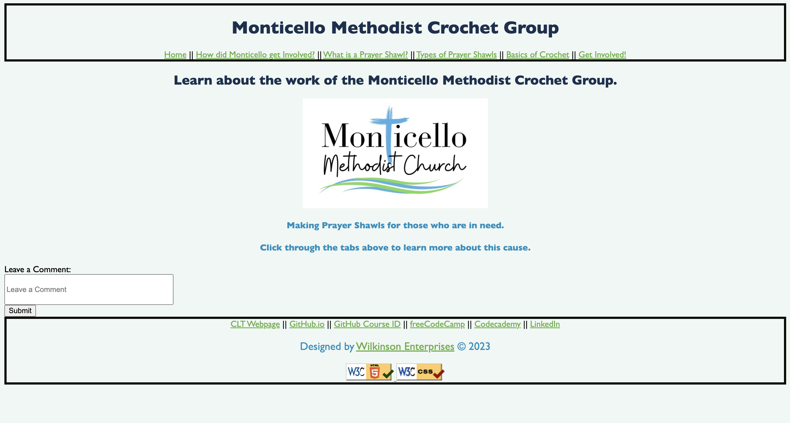

Peer Review 2
Review - Wilkinson, Emily

Link to page.
1 - Complete
2 - None of the files, folders, scripts, and images contain spaces or upper-case letters.
3 - Design
a. Page does have sufficient font-size/contrast so reading is easy.
b. Page has site colors and font using standard .css files.
c. CRAP
i. Contrast - Nice use of contrast to allow reader to clearly and concisely read the page.
ii. Repetition - While I see nice repetition throughout the page, I also see a lot of inconsistent page elements.
iii. Alignment - There are a lot of elements that are aligned well, but I also see elements that are aligned awkwardly.
iv. Proximity - Proximity of elements varies throughout the website.
4 - Page has within it
a. Header - Nice header, I like the use of a navbar!
b. Main - Nice front page.
c. Footer - Nice footer, matches the style of header creating consistency.
5 - Nice use of js to extend your header onto the html page. Header has a nice and consistent nav that follows throughout the pages.
6 - Main usually start with the name of the page. However, the homepage is an exception.
7 - Does not have a brand tagline execpt on the front page. I think this looks nice and doesn't need to be changed.
8 - Page has a footer with:
a. Designed by Wilkinson Enterprises - A link to your page.
b. Page has a html validation button/link and validates.
c. Page has a css validation button/link and validates.
9 - Page has met requirement for this assignment
What else I noticed - I love the aesthetic and color skem! However, I think you should add more consistency with the alignment. I see some text aligned to the left, some center. I also see each page has a leave a comment feature. I think this is a redundant. I think you can only include it for one page and it will get the job done! While I like the color skem there are moments where some text color turn blues or bold. I think making these text change more consistent will enhance user experience. I also notice there are moments where text spacing inconsistently changes. Fixing this will also enhance user experience! Overall, great page!